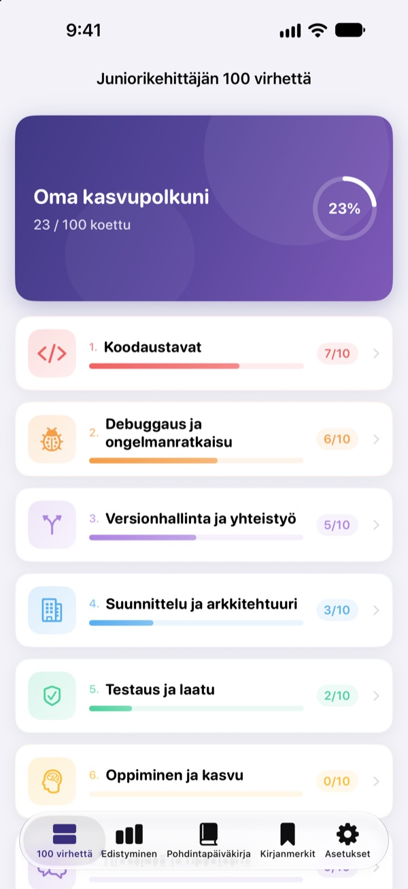
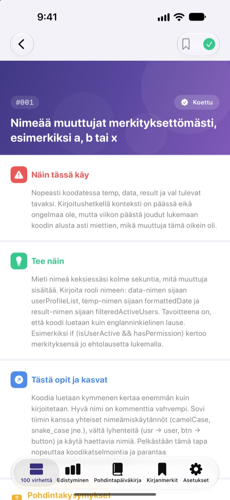
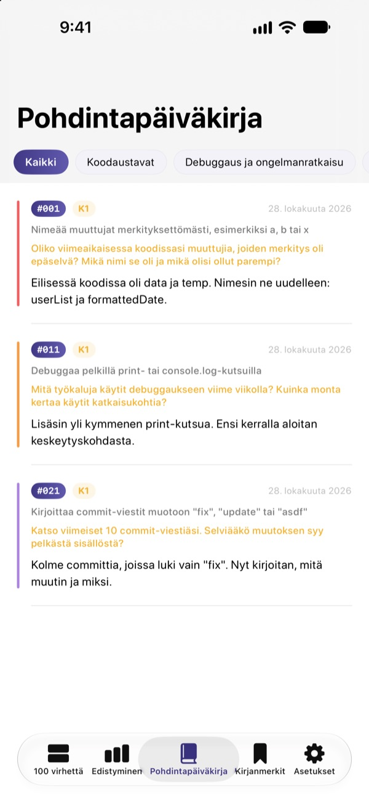
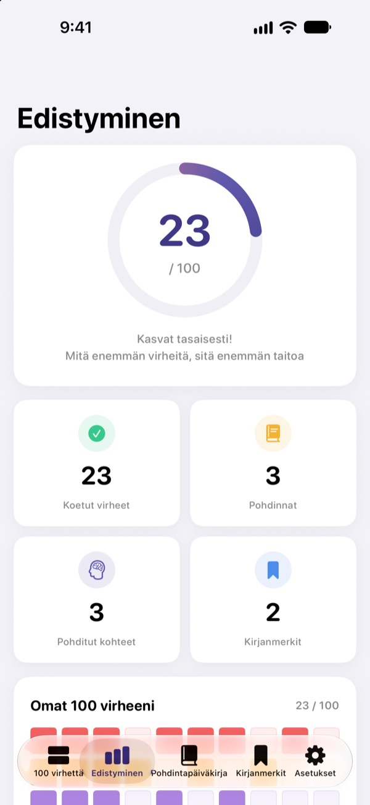

Tunne virheet
ennen kuin sattuu
100 virhettä, joita aloittelevat kehittäjät tekevät useimmin, yhdessä paikassa. Jokaisesta luet, mitä tapahtuu, mitä tehdä ja mitä opit, ja vastaat pohdintakysymykseen, jotta et tee samaa virhettä kahdesti.
Ensimmäiset 30 virhettä ovat ilmaisia. iPhonelle, iPadille ja Macille.

Avaa yksi virhe
Tässä ovat ensimmäisen ilmaisen kategorian 10 virhettä, sanasta sanaan kuten sovelluksessa. Merkitse jo kokemasi kohdalla Koettu.
Taas sama kommentti koodikatselmoinnissa?
Epäselvät muuttujien nimet, 200 rivin funktiot, kopioitu koodi. Jokainen seniori on käynyt sen läpi, mutta yleensä sen huomaa vasta itse kompastuessaan. 100 virhettä näyttää nämä virheet etukäteen ja saa sinut pohtimaan omaa työtäsi, jotta et toista niitä.
Mitä tapahtuu, mitä tehdä, mitä oppia
Jokainen virhe on jaettu kolmeen osaan: mitä tapahtuu, mitä tehdä ja mitä siitä opit.
Kymmenen kategoriaa koodaustavoista tietoturvaan ja suorituskykyyn, vain virheitä, jotka toistuvat oikeissa tiimeissä kerta toisensa jälkeen.

Pohdintakysymykset, jotta asia jää mieleen
Jokaisessa virheessä on 4 pohdintakysymystä, yhteensä 400. Vastaa omia projektejasi ajatellen, niin luettu muuttuu kokemukseksi.
Vastauksesi kerääntyvät pohdintapäiväkirjaan kategorioittain, valmiina luettaviksi uudelleen.

Näe, kuinka pitkälle olet päässyt
Merkitse kokemasi virheet, ja edistymisesi kasvaa kategorioittain ja kokonaisuutena. Lisää kirjanmerkki siihen, mihin haluat palata.
Kaikki synkronoituu iCloudin kautta iPhonen, iPadin ja Macin välillä.

Kolme vaihetta alkuun
- 1
Valitse kategoria
Koodaustavat, debuggaus ja versionhallinta ovat auki ilmaiseksi.
- 2
Lue ja merkitse
Napauta Koettu niiden virheiden kohdalla, jotka olet tehnyt itse.
- 3
Pohdi
Kirjoita vastaus, vaikka lyhyt. Se tallentuu pohdintapäiväkirjaasi.
10 kategoriaa
- Koodaustavat
- #001–#010 · Ilmainen
- Debuggaus ja ongelmanratkaisu
- #011–#020 · Ilmainen
- Versionhallinta ja yhteistyö
- #021–#030 · Ilmainen
- Suunnittelu ja arkkitehtuuri
- #031–#040 · PRO
- Testaus ja laatu
- #041–#050 · PRO
- Oppiminen ja kasvu
- #051–#060 · PRO
- Viestintä ja yhteistyö
- #061–#070 · PRO
- Julkaisu ja ylläpito
- #071–#080 · PRO
- Tietoturva ja data
- #081–#090 · PRO
- Suorituskyky ja optimointi
- #091–#100 · PRO
Jokaisessa kategoriassa on 10 virhettä ja jokaisessa virheessä 4 pohdintakysymystä.
30 ilmaiseksi. Kaikki 100 PRO:lla.
Ilmainen
- Ensimmäiset 3 kategoriaa, 30 virhettä
- Niiden 120 pohdintakysymystä
- Tarkistuslista, pohdintapäiväkirja, edistyminen ja kirjanmerkit
- iCloud-synkronointi (iPhone, iPad, Mac)
100 virhettä PRO
- Loput 7 kategoriaa, 70 virhettä lisää (#031–#100)
- 280 pohdintakysymystä lisää
- Kaikki tulevat sisältöpäivitykset
Kuukausi- tai vuositilaus (jopa 50 % kuukausitilausta edullisempi) tai kertaosto loppuiäksi.
Ei henkilötietojen keruuta, ei analytiikkaa eikä mainoksia.
Usein kysyttyä
Mikä on ilmaista?
Kaikki 30 virhettä kysymyksineen kategorioissa Koodaustavat, Debuggaus ja ongelmanratkaisu sekä Versionhallinta ja yhteistyö. Myös tarkistuslista, pohdintapäiväkirja, edistyminen, kirjanmerkit ja iCloud-synkronointi ovat ilmaisia.
Miten käytän PRO:ta toisella laitteella?
Kirjaudu samalla Apple ID:llä ja napauta tilausnäkymässä Palauta ostokset.
Miten peruutan tilauksen?
Milloin tahansa kohdassa Asetukset › Apple ID › Tilaukset. Tilaus uusiutuu automaattisesti, ellet peru sitä vähintään 24 tuntia ennen kuluvan jakson päättymistä. Elinikäinen ostos maksetaan vain kerran.
Tiedot eivät synkronoidu laitteiden välillä.
Tarkista, että kaikki laitteet on kirjattu iCloudiin samalla Apple ID:llä ja että iCloud on päällä tälle sovellukselle Asetuksissa. Synkronointi vaatii myös verkkoyhteyden.
Miten poistan kaiken?
Napauta sovelluksen asetuksissa Nollaa kaikki tiedot. Merkinnät, vastaukset ja kirjanmerkit poistetaan, eikä toimintoa voi perua.
Millä laitteilla sovellus toimii?
iPhonella, iPadilla ja Macilla. PRO avautuu kaikilla laitteilla, joilla on sama Apple ID.
Lähetetäänkö tietojani jonnekin?
Ei. Merkintäsi ja vastauksesi tallentuvat vain laitteillesi ja omaan iCloudiisi. Sovellus ei kerää henkilötietoja, eikä siinä ole analytiikkaa tai mainoksia.
Kysymyksiä tai ehdotuksia? Kirjoita osoitteeseen leeo@kakao.com.